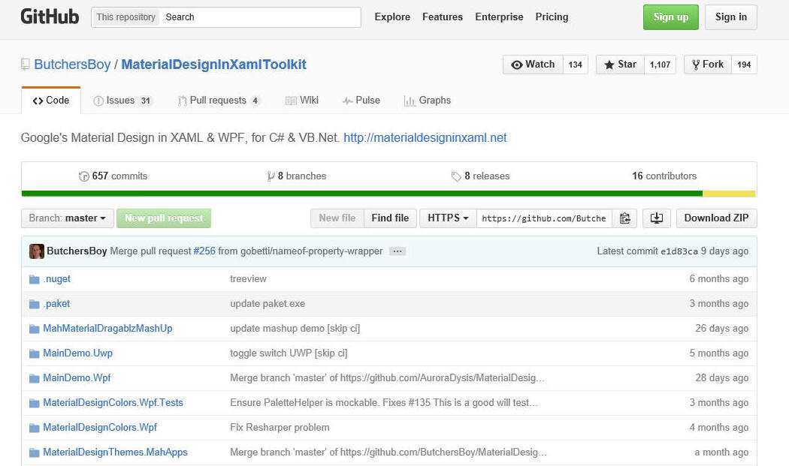
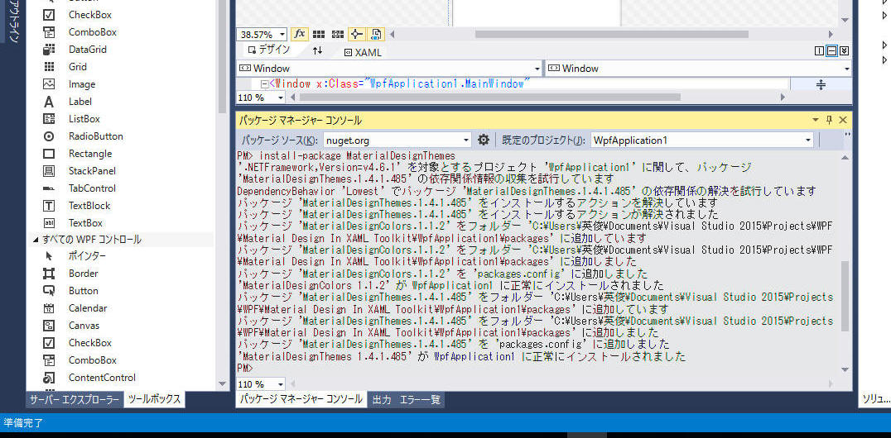
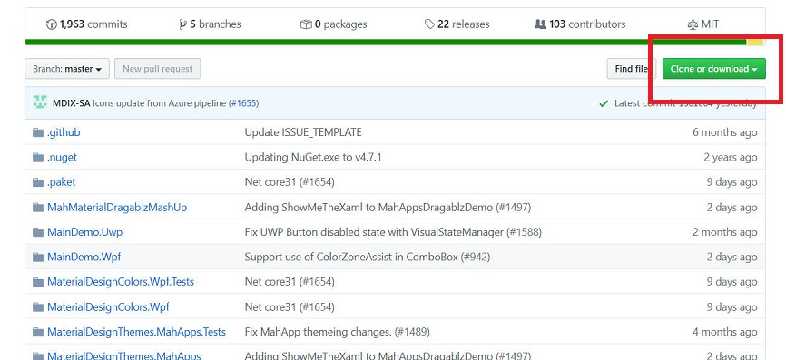
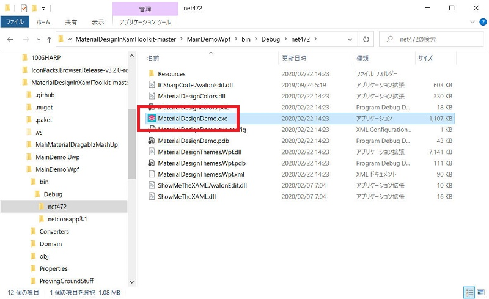
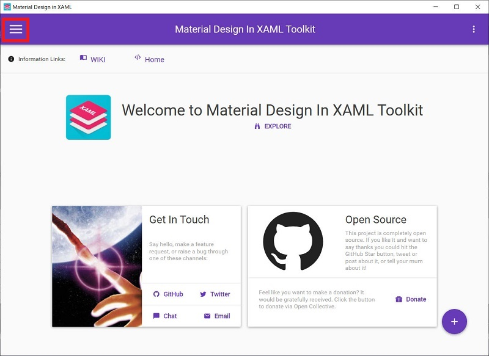
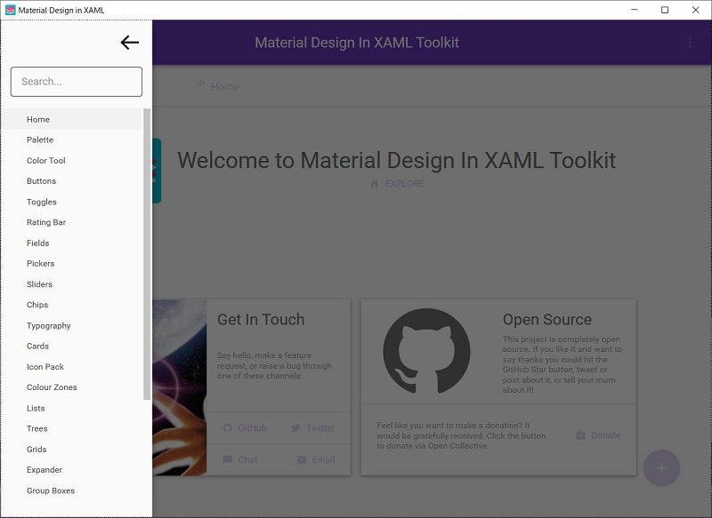
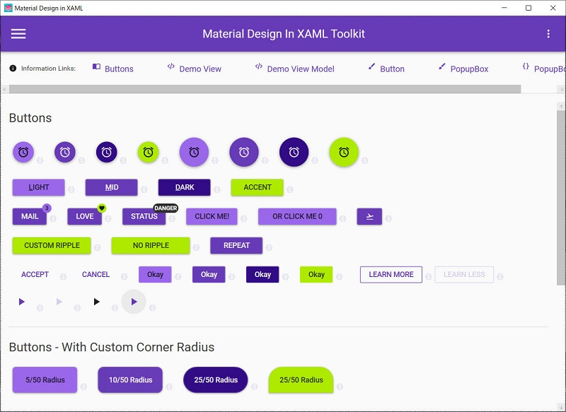
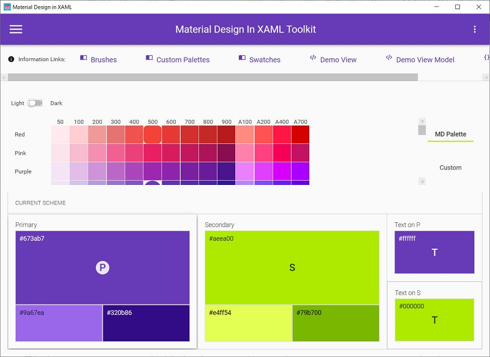
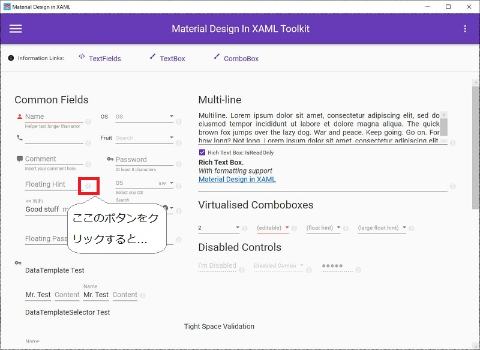
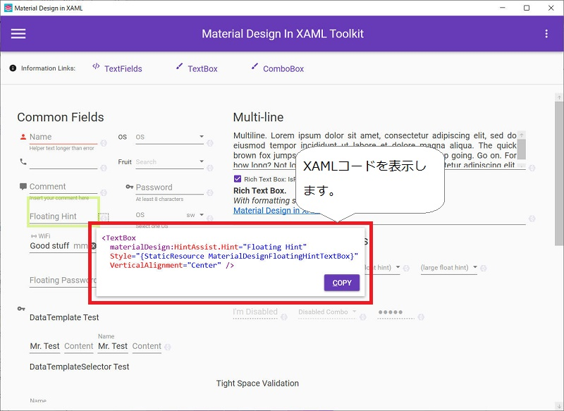

「Material Design In XAML Toolkit」 は、WPF や UWP(Universal Windows
Platform)アプリで Androidなどの米Googleのプロダクトで採用されているマテリアルデザインを実現するものです。
使用ライセンスは「MIT License」です。このライセンスは、いくつかの条件を守れば、商用／非商用にかかわらず無償使用できるものです。
「Material Design In XAML Toolkit」 は、以下の方法で取得可能です。
下記より入手できます。
https://github.com/ButchersBoy/MaterialDesignInXamlToolkit
画面右側にある 「Download ZIP」 ボタンをクリックしてZIPファイルを入手します。

NuGet パッケージマネージャーを開き、「MaterialDesignThemes」で検索します。「MaterialDesignInXamlToolkit」ではない点に注意してください。
（2016/2/27時点 のバージョンは 1.4.1.485 でした。.NET4.5で作られており、.NET4.0以下では使用できなさそうです。）
私は「パッケージマネージャーコンソール」から下記のコマンドを入力してインストールしました。
「install-package
MaterialDesignThemes」

[概要]
"https://github.com/MaterialDesignInXAML/MaterialDesignInXamlToolkit" から入手したソースをビルドして、まずはデモアプリを動かしてみます。
[評価環境]
| コンパイラ : | Visual Studio 2019 pro., | Version 16.4.5 |
| OS: | Windows10 home, | Version 1909 |
(1) 画面右上の「Clone or download」をクリックして「Download ZIP」することで、ソースコード一式を入手します。

(2) Visual Studio で "MaterialDesignToolkit.Wpf.sln" を開きます。
(3) ソリューション "MaterialDesignTookkit.Wpf" をリビルドします。
(4) ビルドされた "MainDemo.Wpf" フォルダ内を確認し、”MaterialDesignDemo.exe” を実行します。

すると、こんなアプリが起動します。
画面左上の 三 (ハンバーガーメニュー) でいろんな画面へ切り替えられます。

(5) あとはいろいろ触ってみましょう。

■Buttons

■Color tools

■Fields


このデモアプリを見ながら使いたい部品を選んで、自分が作るアプリへ組み込んでいきます。
本ページの情報は、特記無い限り下記 MIT ライセンスで提供されます。
|
The MIT License (MIT) Copyright © 2016-2022 Kinoshita Hidetoshi Permission is hereby granted, free of charge, to any person obtaining a copy of this software and associated documentation files (the "Software"), to deal in the Software without restriction, including without limitation the rights to use, copy, modify, merge, publish, distribute, sublicense, and/or sell copies of the Software, and to permit persons to whom the Software is furnished to do so, subject to the following conditions: The above copyright notice and this permission notice shall be included in all copies or substantial portions of the Software. THE SOFTWARE IS PROVIDED "AS IS", WITHOUT WARRANTY OF ANY KIND, EXPRESS OR IMPLIED, INCLUDING BUT NOT LIMITED TO THE WARRANTIES OF MERCHANTABILITY, FITNESS FOR A PARTICULAR PURPOSE AND NONINFRINGEMENT. IN NO EVENT SHALL THE AUTHORS OR COPYRIGHT HOLDERS BE LIABLE FOR ANY CLAIM, DAMAGES OR OTHER LIABILITY, WHETHER IN AN ACTION OF CONTRACT, TORT OR OTHERWISE, ARISING FROM, OUT OF OR IN CONNECTION WITH THE SOFTWARE OR THE USE OR OTHER DEALINGS IN THE SOFTWARE. |
| 2022-07-18 | - | ページデザイン更新 |
| 2020-02-27 | - | 「2. デモアプリを動かす」を追加 |
| 2016-02-27 | - | 新規作成 |